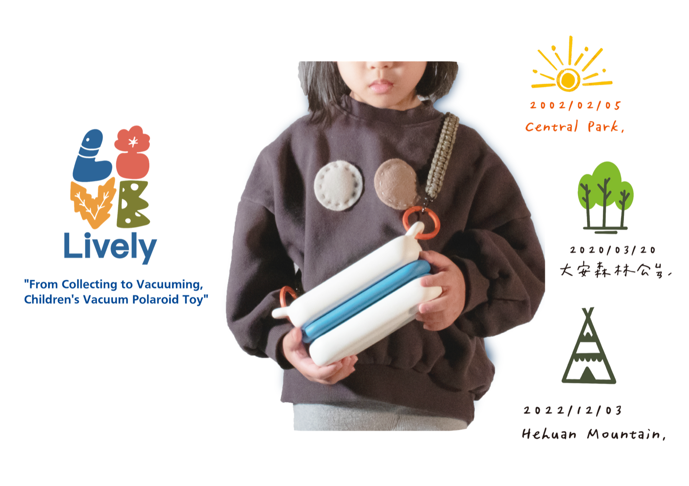
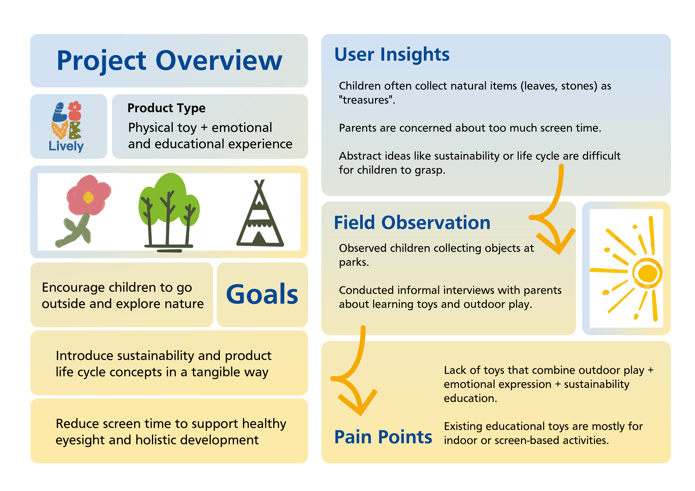
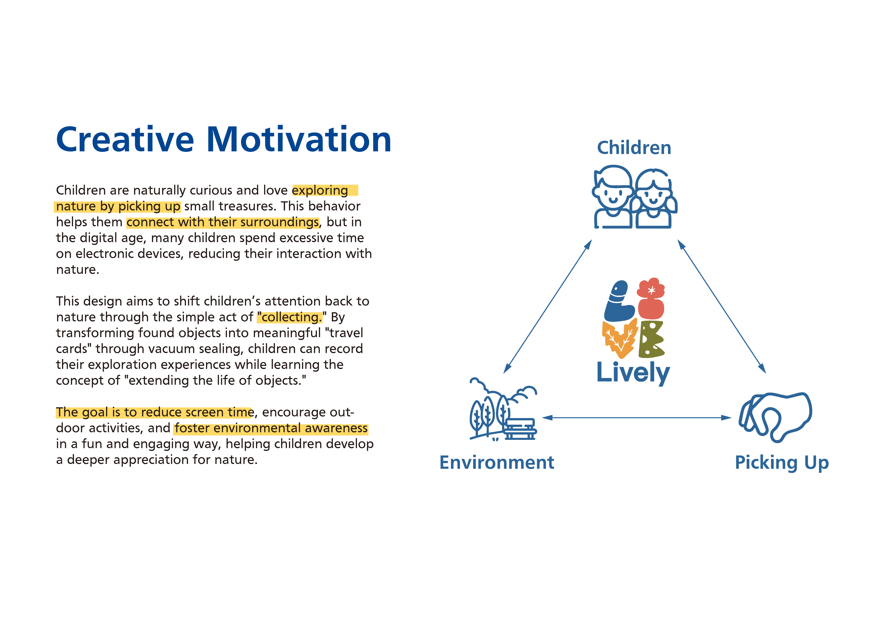
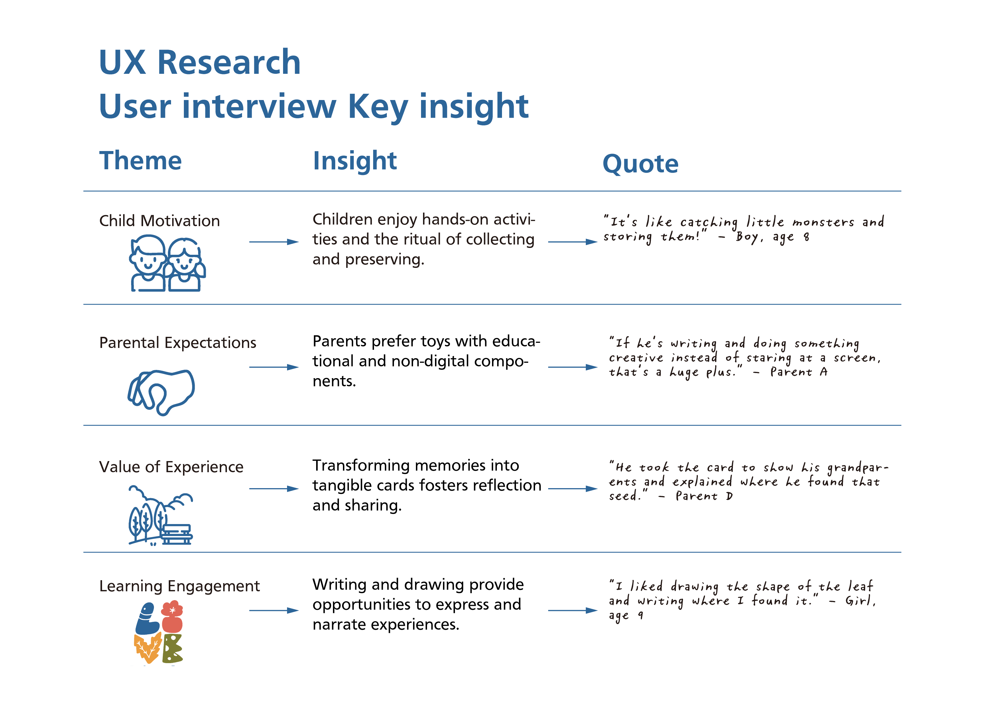
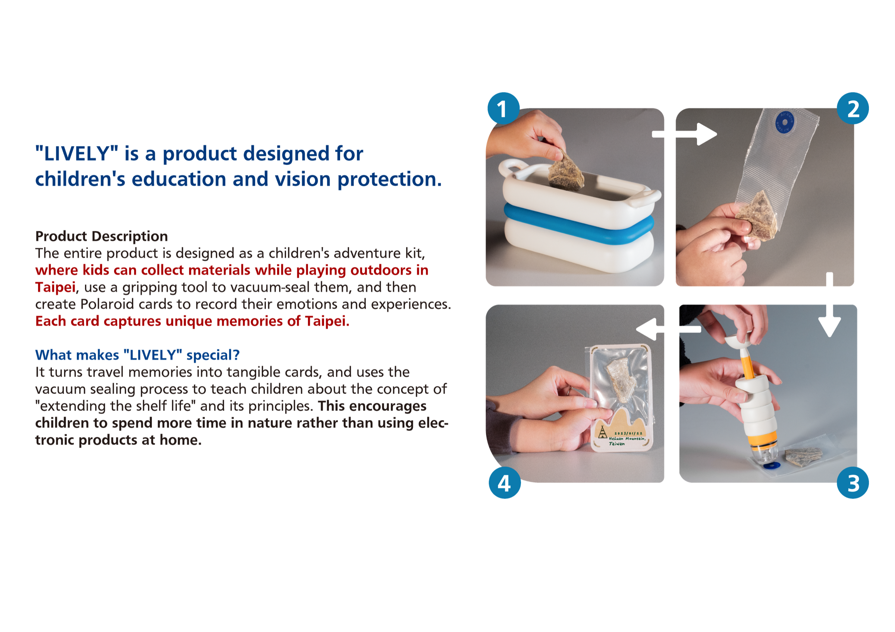
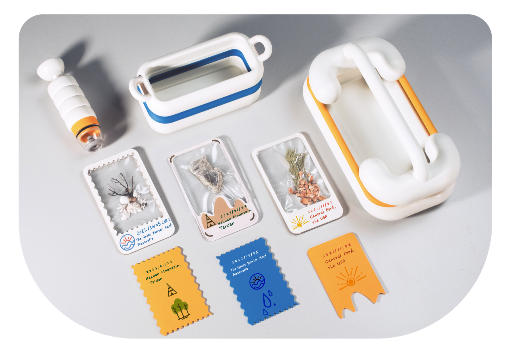

Lively
From collecting to vacuuming — a polaroid toy that reframes tidying up as something kids want to do.
Overview
Kids love collecting, and they dislike cleaning — same action, different framing. Lively turns the everyday mess into a hunt: a handheld toy that vacuums up small objects and prints a memory of what it found.
A child sees treasure where adults see clutter.
The research began with parents and early-elementary kids around Taipei. The pattern was clear — children build entire narratives around tiny found objects, and feel punished when those worlds get swept into a bin.
The question became: what if the cleaning tool itself respected the story?


Vacuum, capture, remember.
The toy houses three chambers. The front captures the small object; a middle reader identifies it; a rear thermal printer ejects a polaroid-style card with the date, the place, and a simple illustration of what was found.
Kids can clip the cards into a collection book — so tidying the room grows a personal field-guide of their own world.




Cleaning that grows a story.
Lively became my first study in behavior-shifting product design — not through gamification tricks, but by letting an existing child impulse (to collect, to name, to keep) do the work. It remains one of my favorite reminders that friction, when placed kindly, becomes ritual.